Трамп: Украинский конфликт очень близок к завершению. Соглашение по Украине затронет всю Европу. Это будет масштабное, большое, прекрасное соглашение. Все будут в восторге. @bankrollo
Трамп: Украинский конфликт очень близок к завершению. Соглашение по Украине затронет всю Европу. Это будет масштабное, большое, прекрасное соглашение. Все будут в восторге. @bankrollo
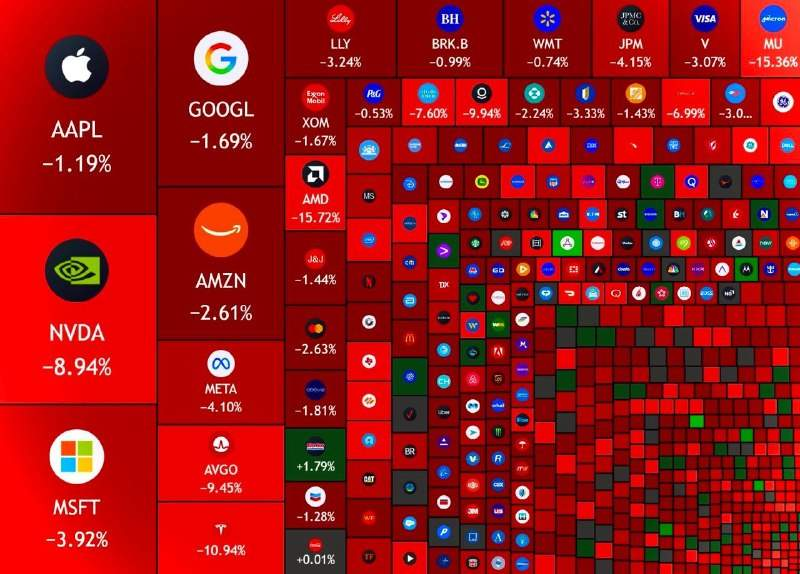
Сегодня американский рынок пережил худший день с ковидного обвала 2020 года. Технологический индекс Nasdaq 100 упал на 6,4%, а S&P 500 потерял около 4%. За одни сутки с рынка США стёрто $3 трлн. Инвесторы массово распродают акции компаний в ожидании, что демократы закроют дата-центры или зарегулируют их строительство. @bankrollo
В Москве дипломированные специалисты догнали курьеров по зарплатам. Медианная зарплата курьеров выросла почти на 8% за год — со 130 до 140 тысяч рублей в месяц. Столько же работодатели предлагают специалистам с высшим образованием, следует из данных SuperJob. @bankrollo
В Госдуме решили не наказывать россиян за опасную езду. Депутаты сочли неактуальным штраф в 3-5 тысяч рублей и лишение водительских прав за «игру в шашечки» на дорогах, резкое торможение и другие провокации. Всё из-за «правовой неопределённости» термина, что может привести к неоднозначной правоприменительной практике, считают в Госдуме. @bankrollo
Россияне скупили рекордное количество электрокаров в октябре. Всего было приобретено более 4 тысяч новых электрокаров — в 2,5 раза больше, чем годом ранее, следует из данных Автостата. Теперь их доля на рынке новых легковушек достигла 3% против 0,6% в первом полугодии. @bankrollo
На 12 млрд рублей обманула Минобороны банда «строителей», пишет Mash. Она не построила 32 объекта в разных регионах России, но отчиталась об их завершении. Установлены уже как минимум 7 участников группировки: часть задержана, трое скрываются. В 2024 году предполагаемого главаря банды Горбачёва уже судили за хищение у Минобороны около 360 млн рублей. @bankrollo
Повысить на 25% налог с игрушек для олигархов призвали в Госдуме. «Закрытые ПИФы — это игрушки для олигархов. Число пайщиков здесь, как правило, одна-две персоны. С 2020 года число подобных финансовых междусобойчиков выросло в 5 раз. Сейчас в них лежит активов примерно на 6 трлн рублей, которыми владеют менее 2 тысяч человек — в среднем больше 3 млрд на одного пайщика. Это так называемые "квалифицированные инвесторы", а проще говоря, наши миллиардеры, их жёны, дети, любовницы и прочая родня», — заявил депутат Миронов. @bankrollo
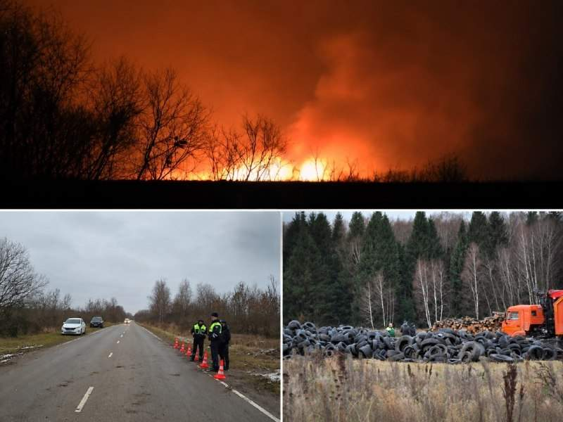
В Подмосковье 800 коров сожгли на огромном костре, пишет Baza. Животных уничтожили после вспышки узелкового дерматита. Костёр организовали менее чем в 2 км от посёлка Семёновское. Ранее власти обещали отказаться от такого способа утилизации из-за экологических рисков. По словам местных, позже туда привезли ещё 400 коров и засыпали всё покрышками. @bankrollo
Московские пенсионерки начали работать частными детективами. За плату они готовы незаметно проследить за супругами или детьми. Объявления с такими предложениями появились в лифтах жилых домов. @bankrollo
Аналитики изучили , какие организации появлялись на картах за последний год в период с октября 2025 по сентябрь 2026 года. Среди типов бизнеса лидируют развлечения, авто, бьюти-услуги и ремонт — такие данные получили Яндекс Карты. Число новых карточек игровых клубов за год стало почти в четыре раза больше, чем годом ранее. В ресторанном бизнесе лидируют чайханы: за год число новых карточек таких заведений составило 82,7% от их прежнего количества. Также прибавили чайные (68,8%), фудмоллы (23,4%) и безалкогольные бары (11,6%). Среди городов-миллионников на первом месте Краснодар (22%), за ним идут Москва (17,4%) и Казань (17,3%). Среди городов поменьше первое место занял Мурино. При этом карточки создают не только новые бизнесы, но и уже работающие компании. @bankrollo
Летние шины зимой могут стать доказательством вины в ДТП вне зависимости от действий участников аварии, напомнили адвокаты. По их словам, если экспертиза установит, что из-за таких шин водитель утратил контроль над автомобилем, суды могут квалифицировать действия как нарушение ПДД РФ. На летних шинах в России запрещено ездить с 1 декабря по 1 марта. @bankrollo
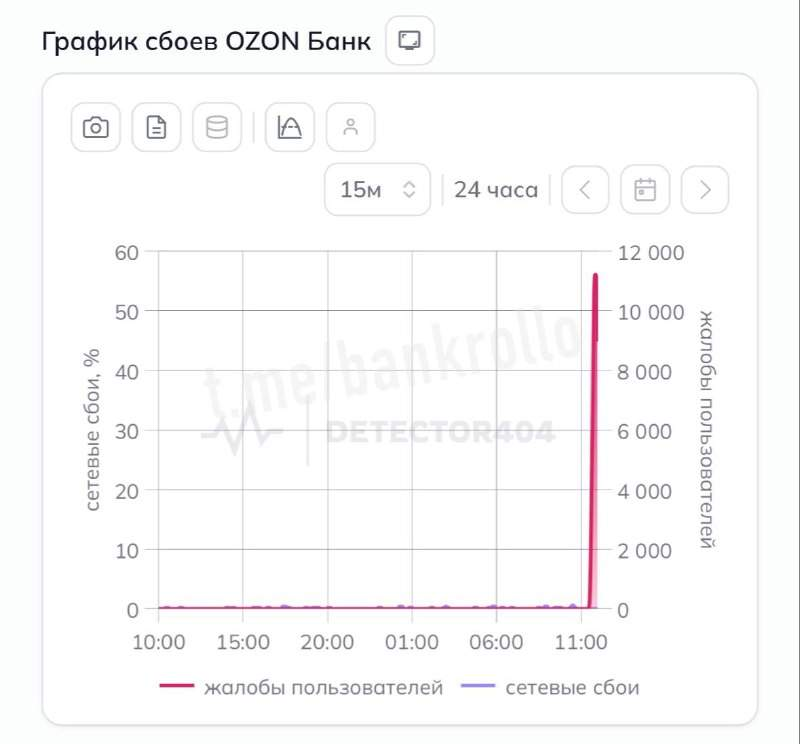
Массовые сбои у Ozon Банка. У пользователей не работает приложение и не проходит оплата. @bankrollo UPD: Ozon устранил проблемы в работе сервисов после сбоя.
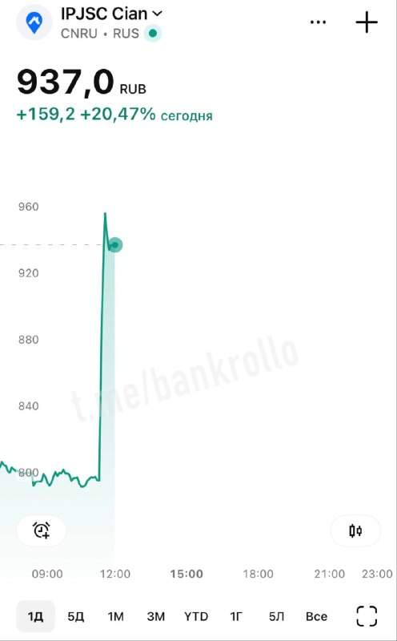
Акции «Циана» подлетели выше 20% на новости о планах «Т-Технологии» приобрести долю в компании. @bankrollo
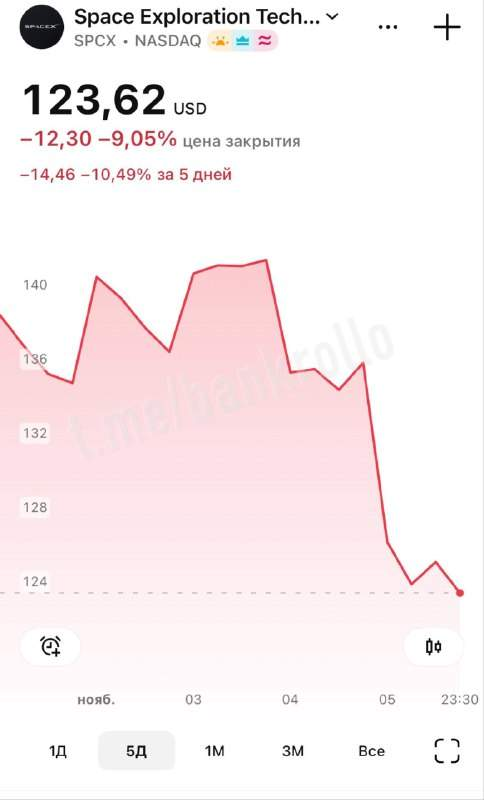
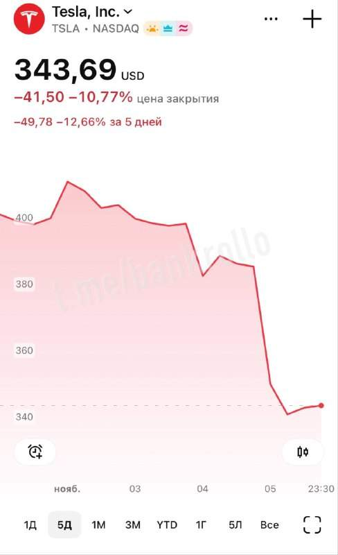
$420 млрд потеряли компании Маска после победы демократов в Конгрессе США. Это связано с тем, что при большинстве Демпартии в Конгрессе Маску могут грозить расследования, а его компании могут столкнуться с усилением давления со стороны регуляторов, пишет CNBC. В ходе предвыборной кампании бизнесмен пожертвовал республиканцам около $470 млн. @bankrollo
Пользователи все меньше различают классические поисковики и ИИ-боты: ChatGPT закрывает уже пятую часть запросов, которые ранее были бы у Google. Такую оценку в интервью Big Technology привёл глава потребительских продуктов ChatGPT Адам Фрай. До такого уровня ChatGPT дорос примерно за 1,5 года с момента, как научился искать в сети. Если раньше им пользовались в основном для текстов и кода, то теперь через него ищут людей, места, советы по финансам и здоровью. @bankrollo
Tesla сворачивает производство Cybertruck из-за неоправданных ожиданий. Маск планировал продавать по 250 тысяч машин в год, но за 2 года удалось реализовать всего 63 тысячи. Теперь завод в Техасе переоборудуют под производство новых беспилотных такси Cybercab. @bankrollo
Пицце не место в российских школах — советник президента РФ Ямпольская. @bankrollo https://t.me/bankrollo/69560 Школьная пицца наносит сокрушительный удар по желудку, заявила диетолог Мухина. По её словам, в популярном у детей блюде много акриламида и специй, поэтому его стоит заменить на полезные альтернативы — каши, супы и пюре. @bankrollo
Билайн договорился об условиях маркировки звонков со всеми крупнейшими банками, а остальные операторы продолжают настаивать на цене в 30 копеек за каждый вызов. Банки считают плату за маркировку необоснованной, поскольку услуга предусмотрена законодательством. Если договориться не удастся, операторы заблокируют немаркированные звонки, в том числе предупреждения о подозрительных операциях. @bankrollo
ФНС отсудила у россиян рекордные 95% налоговых платежей в первом полугодии. Это максимум за последние 10 лет, пишет РБК. Всего в пользу налоговой было взыскано 162 млрд рублей. На это могло повлиять ужесточение позиции судов, повышение качества налогового контроля и рост эффективности досудебного регулирования, считают эксперты. @bankrollo
До - 3°C может опуститься температура в Москве предстоящей ночью. Она может стать самой холодной с начала осени, сообщили в Гидрометцентре. @bankrollo
Российские компании всё чаще размещают свободные средства на бирже. Так бизнес ищет новые способы управлять ликвидностью на фоне снижения ставок. По данным Мосбиржи, за девять месяцев оборот компаний на денежном рынке вырос почти наполовину. Как отмечает Андрей Двоеглазов из ВТБ Мои Инвестиции, предприниматели начинают использовать для средств бизнеса инструменты, знакомые им по личным вложениям. При этом важно соотносить срок размещения с тем, когда деньги понадобятся компании. @bankrollo
Макан выступал на корпоративах во время службы в армии. Его гонорар составлял 13 млн рублей за 20 минут выступления, пишет Mash Money. В райдере артиста должны быть три чёрных BMW 7-й серии не старше 2021 года, сопровождение ДПС, люксовый номер в отеле площадью от 100 кв. м., а также частный самолёт при длительных перелётах. @bankrollo
ЦБ разрешит неквалифицированным инвесторам покупать Bitcoin, Etherium и USDT через брокеров и криптообменники с лимитом 300 тысяч рублей в год через одного посредника. Квалифицированные инвесторы смогут покупать крипту без ограничений после теста. Такое указание вступит в силу 17 ноября. @bankrollo
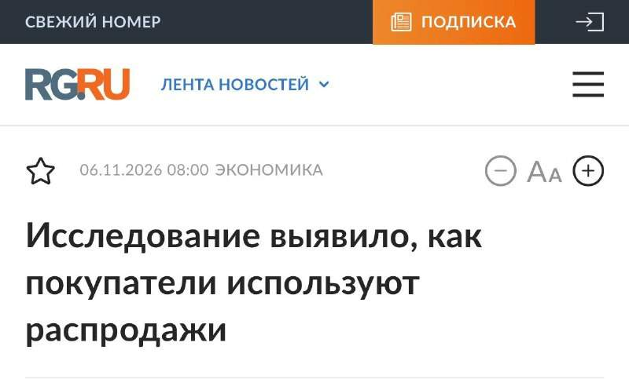
Подход к распродажам у большинства россиян стал прагматичным: 8 из 10 покупателей больше доверяют цене, если видят историю её изменения, следует из исследования Яндекс Поиска. При этом 40% участников «Чёрной пятницы» прошлого года отслеживали цены ещё до старта акций, чтобы убедиться, что скидка не накручена. Ещё 65% онлайн-покупателей заранее ищут промокоды, чтобы добиться максимальной выгоды. @bankrollo
Оценка Anthropic рухнула в 2 раза перед IPO. Сначала инвесторы обсуждали стоимость в $2 трлн, но после обвала фондового рынка США она опустилась до $1 трлн, пишет WSJ. Компания хочет провести IPO до 26 ноября. @bankrollo
В Крыму и Севастополе ввели льготную ипотеку под 8%, сообщили в Минфине. Максимальная сумма кредита составит 8 млн рублей, а первоначальный взнос должен быть не менее 20% цены договора. Воспользоваться льготой можно в период с 1 ноября 2026 года по 30 апреля 2027 года. @bankrollo
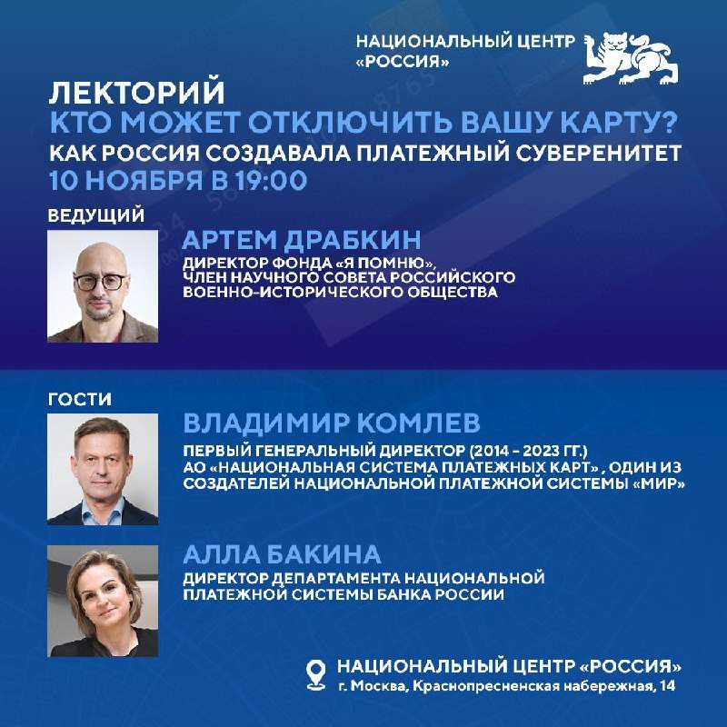
10 ноября в Национальном центре «Россия» эксперты бесплатно расскажут о том, как устроены российские финансовые технологии. Гостями станут Владимир Комлев — первый генеральный директор Национальной системы платёжных карт и один из создателей карты «Мир», а также Алла Бакина — директор департамента национальной платёжной системы Банка России. Вести встречу будет Артём Драбкин — директор Фонда «Я помню». В ходе мероприятия посетители смогут лично обратиться к создателю карты «Мир» с интересующими вопросами. Вход бесплатный, по предварительной регистрации, сбор гостей с 18:00, а начало — в 19:00 по адресу Краснопресненская набережная, 14. Перед посещением необходимо зарегистрироваться на сайте. @bankrollo
Двое немцев и поляк попытались перевезти в Германию тысячу тарантулов, спрятанных в грязных носках. Таможенники в Перу обратили внимание на шевеление внутри чемоданов путешественников. Открыв их, они нашли тысячи особей пауков — от яиц и детёнышей до взрослых. Один тарантул в Германии может стоить до 45 тысяч рублей. @bankrollo
Пенсии россиян автоматически переведут на программу долгосрочных сбережений с 1 апреля 2027 года — Минфин. Законопроект уже готов, документ на этой неделе должно рассмотреть правительство, пишет РБК. Под конвертацию подпадает 6,6 трлн рублей пенсионных накоплений… https://t.me/bankrollo/69374 Пенсии американцев вложат в крипту. Минтруд США подготовил соответствующий документ, сейчас он находится на финальной проверке в Белом доме. @bankrollo
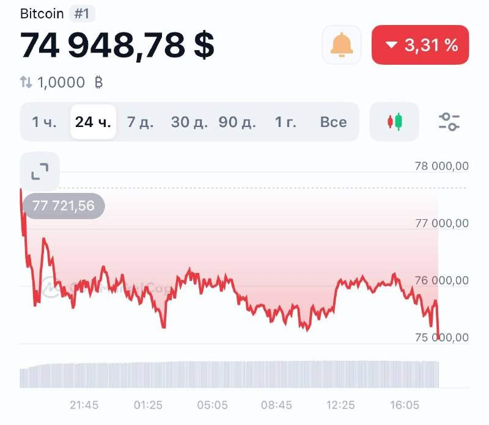
Биткоин упал ниже $75 000. @bankrollo
Beget потерял все данные в облачной инфраструктуре, также утрачены настройки IP и CDN, заявил хостинг-провайдер. Beget — второй по числу доменов в зоне .RU регистратор и хостер: 540,7 тысячи доменов. @bankrollo https://t.me/bankrollo/69459 Облачная инфраструктура хостинг-провайдера Beget уничтожена — заявление компании. @bankrollo
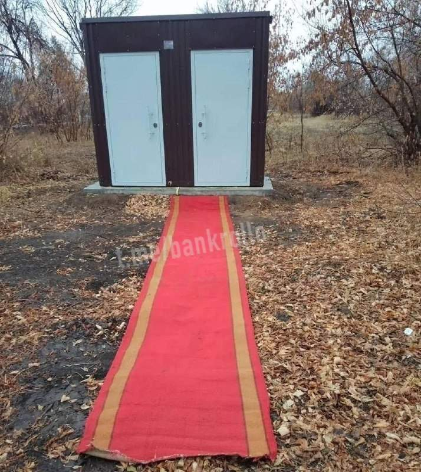
В селе под Оренбургом постелили красную ковровую дорожку к уличному туалету перед приездом губернатора. @bankrollo
Изучение иностранных языков — это ползучее подчинение Западу, объяснил депутат и председатель партии «Родина» Журавлев. «Я всю Европу проехал и ни слова по-английски принципиально не сказал. Только по-русски говорил». @bankrollo
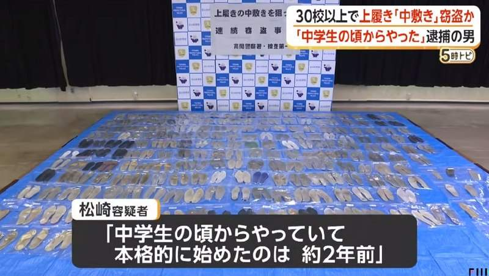
В Японии задержали мужчину, который по ночам проникал в школы и крал стельки из сменной обуви учениц. При обыске у вора нашли 451 стельку, а в карманах его куртки было ещё восемь. @bankrollo
Переговоры с США и Украиной пройдут в Абу-Даби во вторник, 10 ноября — официально подтвердил Путин. @bankrollo
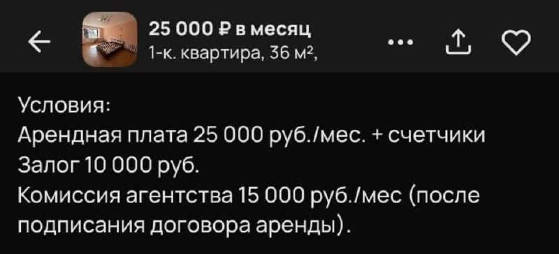
Риелторы придумали брать комиссию каждый месяц. @bankrollo
Каждый десятый американец не собирается работать в день релиза GTA 6, 19 ноября — Business Insider. @bankrollo